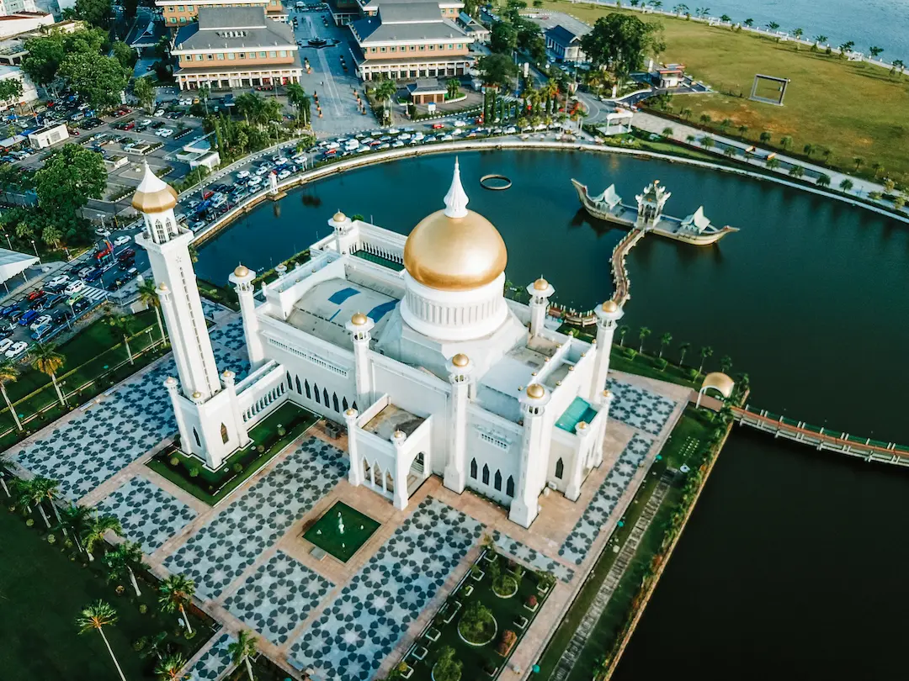
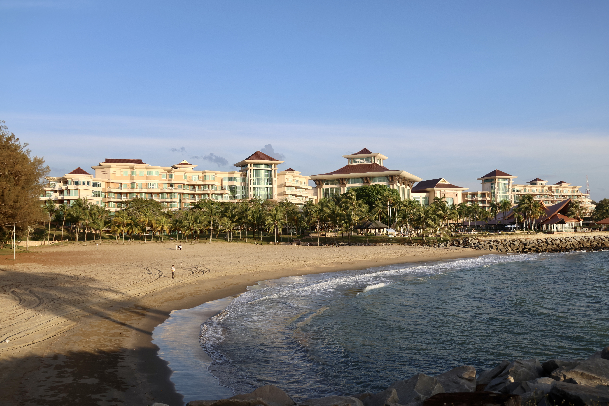
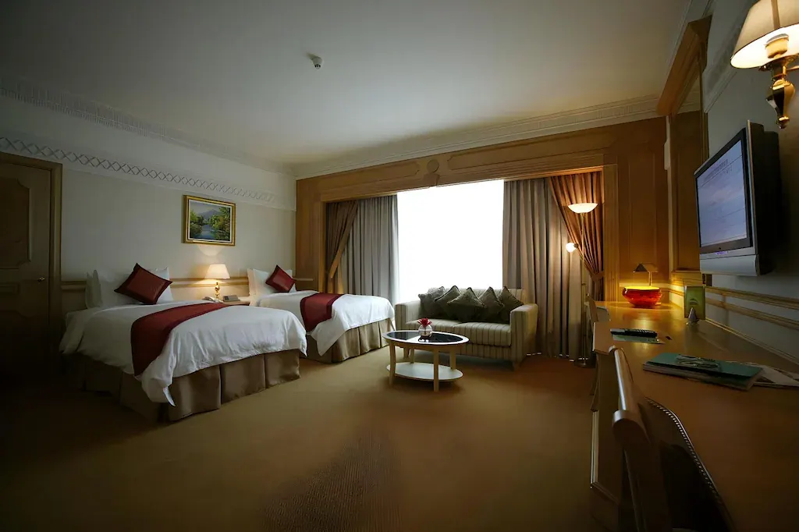

Best Time To Visit
Brunei has a tropical climate all year round. February to April is often a good period for outdoor activities.
Learn MorePLAN YOUR JOURNEY
from finding the perfect place to stay to discovering local customs, let us help you plan a smooth, memorable and enjoyable trip to Brunei Darussalam!.
Explore Travel Guide
TRAVEL ESSENTIALS
YOUR JOURNEY STARTS HERE
Fly into Brunei International Airport (BWN), the countrys main international gateway. Flights connect Brunei with selected international destinations through several airlines.
BEFORE YOU TRAVEL
Prepare your trip to Brunei Darussalam by checking the Visa requirements and completing the necessary arrival registration before travelling.
Entry requirements may vary by nationality and can change. Please consult the official immigration website before departure.
Brunei has a tropical climate all year round. February to April is often a good period for outdoor activities.
Learn MoreChoose from car rentals, taxis, ride-hailing services and public buses to explore the country.
Learn MoreDress modestly, respect local customs and be mindful of religious practices, especially during Ramadhan.
Learn MoreWHERE TO STAY
Discover memorable stays to make your Brunei Trip unforgettable.

Jerudong, Brunei Darussalam.
Luxury ResortAn iconic luxury resort known for its beautiful architecture and surroundings.
Visit Hotel Website
bandar Seri Begawan, Brunei Darussalam.
City stayA city hotel offering a convenient access to the capitals attraction, business districts and cultural sites.
Visit Hotel Website
Gadong, Brunei Darussalam
Shopping & DiningA convenient accommodation option for visitors whom is interested in shopping, dining and exploring the Gadong area.
Visit Hotel WebsiteThese are three featured accommodations options, not a verified ranking by visitor numbers.
WHEN TO VISIT
Often a good period for sightseeing and outdoor activities. Enjoy warm weather and explore Brunei's attractions.
Explore the city, cultural attractions and nature reserves. Remember to bring water and sun protection.
Explore the city, cultural attractions and nature reserves. Remember to bring water and sun protection.
Rainfall may be more frequent. Consider indoor attractions and bring an umbrella for outdoor trips.
Brunei's National Day is celebrated on 23 February. Visitors may enjoy national celebrations around this date.
Brunei is warm and humid throughout the year. Weather conditions can vary, so check the forecast before travelling.
EXPLORE WITH EASE
Choose the transport option that suits your journey
A flexible option for exploring attractions across different districts.
useful for direct trips between hotels, restaurants and attractions.
a budget-friendly option on available routes. Check operating times in advance.
Experience a traditional way to travel around the Kampong Ayer and nearby waterways.
TRAVEL WITH RESPECT
BEFORE YOU GO
A little preparation can make your journey smoother and enjoyable.
The Brunei dollar (BND) is the local currency. Keep some cash for small purchases.
Bring lightweight clothing, sunscreen, drinking water and an umbrella.
Check hotel availability, attraction opening hours and travel requirements before your trip.
YOUR BRUNEI ADVENTURE AWAITS